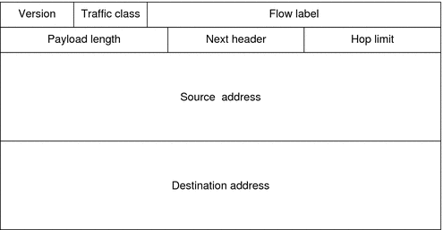

|
|||
|
1. Solaris TCPIP Protocol Suite (Overview) 2. Planning an IPv4 Addressing Scheme (Tasks 3. Planning an IPv6 Addressing Scheme (Overview) 4. Planning an IPv6 Network (Tasks) 5. Configuring TCP/IP Network Services and IPv4 Addressing (Tasks) 6. Administering Network Interfaces (Tasks) 7. Enabling IPv6 on a Network (Tasks) 8. Administering a TCP/IP Network (Tasks) 9. Troubleshooting Network Problems (Tasks) 10. TCP/IP and IPv4 in Depth (Reference) IPv6 Addressing Formats Beyond the Basics Solaris 10 IPv6 Implementation IPv6 Neighbor Discovery Protocol IPv6 Extensions to Solaris Name Services 12. About Solaris DHCP (Overview) 13. Planning for DHCP Service (Tasks) 14. Configuring the DHCP Service (Tasks) 15. Administering DHCP (Tasks) 16. Configuring and Administering DHCP Clients 17. Troubleshooting DHCP (Reference) 18. DHCP Commands and Files (Reference) 19. IP Security Architecture (Overview) 21. IP Security Architecture (Reference) 22. Internet Key Exchange (Overview) 24. Internet Key Exchange (Reference) 25. Solaris IP Filter (Overview) 28. Administering Mobile IP (Tasks) 29. Mobile IP Files and Commands (Reference) 30. Introducing IPMP (Overview) 31. Administering IPMP (Tasks) Part VI IP Quality of Service (IPQoS) 32. Introducing IPQoS (Overview) 33. Planning for an IPQoS-Enabled Network (Tasks) 34. Creating the IPQoS Configuration File (Tasks) 35. Starting and Maintaining IPQoS (Tasks) 36. Using Flow Accounting and Statistics Gathering (Tasks) |
IPv6 Packet Header FormatThe IPv6 protocol defines a set of headers, including the basic IPv6 header and the IPv6 extension headers. The following figure shows the fields that appear in the IPv6 header and the order in which the fields appear. Figure 11-3 IPv6 Basic Header FormatThe following list describes the function of each header field.
IPv6 Extension HeadersIPv6 options are placed in separate extension headers that are located between the IPv6 header and the transport-layer header in a packet. Most IPv6 extension headers are not examined or processed by any router along a packet's delivery path until the packet arrives at its final destination. This feature provides a major improvement in router performance for packets that contain options. In IPv4, the presence of any options requires the router to examine all options. Unlike IPv4 options, IPv6 extension headers can be of arbitrary length. Also, the number of options that a packet carries is not limited to 40 bytes. This feature, in addition to the manner in which IPv6 options are processed, permits IPv6 options to be used for functions that are not practical in IPv4. To improve performance when handling subsequent option headers, and the transport protocol that follows, IPv6 options are always an integer multiple of 8 octets long. The integer multiple of 8 octets retains the alignment of subsequent headers. The following IPv6 extension headers are currently defined:
|
||
|